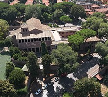
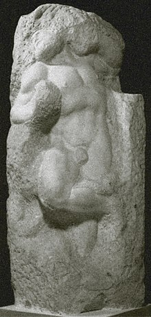
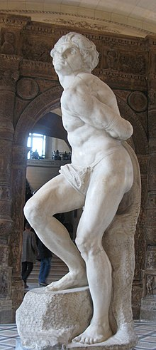

Шор, Ольга Александровна
О́льга Алекса́ндровна Шор (псевдоним: О́льга Деша́рт (Olga Deschartes); 1894—1978) — искусствовед и историк литературы. Наиболее известна как спутница жизни поэта, писателя и философа Вячеслава Ивановича Иванова в годы его итальянской эмиграции. Ольга Шор происходила из известной московской семьи музыкантов и интеллектуалов, получила философское образование в России и Германии. После революции 1917 года работала в Наркомпросе и ГАХНе, с Вячеславом Ивановым познакомилась в 1924 году, накануне отъезда поэта в Италию. В течение трёх лет О. А. Шор была его официальным представителем в СССР, ответственной за сохранение авторских прав, публикации и пересылку стипендии ЦЕКУБУ в Италию, так как В. И. Иванов считался находившимся в зарубежной командировке. В 1927 году переехала к Ивановым в Италию, работала гидом в Риме и канцелярской служащей в Павии, в 1928—1932 годах работала над предисловием к итальянскому изданию «Переписки из двух углов» В. И. Иванова и М. О. Гершензона, после 1934 года всецело посвятила себя поддержанию быта и работоспособности Иванова. После его кончины в 1949 году написала продолжение философской поэмы «Повесть о Светомире царевиче», называя это исполнением завещания поэта, начала издание собрания сочинений В. Иванова, для которого создала биографию-предисловие (1971). Скончалась и похоронена в Риме, так и не приняв итальянского гражданства. Собственные работы О. Шор по итальянскому Возрождению и религиозной философии большей частью остались в рукописи, труд о Микеланджело публиковался в 2011 и 2017 годах целиком и во фрагментах. Архив Ольги Александровны находится в Исследовательском центре Вячеслава Иванова в Риме и по состоянию на 2019 год находился в стадии разборки.
Биография
Годы становления
Ольга Шор происходила из известной московской артистической семьи, являлась двоюродной сестрой мыслителя-сиониста Е. Д. Шора и племянницей пианиста Д. С. Шора. Её отец Александр Соломонович Шор (1864—1939) владел фабрикой роялей, в советское время работал настройщиком. Мать Роза Моисеевна состояла в Обществе свободной эстетики, сестра Вера — скрипачка, брат Юрий (1896—1960) — виолончелист. Сама Ольга с золотой медалью окончила Московскую женскую гимназию княгини С. Н. Голицыной. В гимназические годы Ольга Шор, по её выражению, «контрабандой» (так как это воспрещалось правилами учебных заведений Российской империи) присутствовала на лекциях Вячеслава Иванова, выступавшего в Обществе свободной эстетики. В доме Шоров бывал Лев Толстой, общение родителей с которым Ольга запомнила, несмотря на малый возраст. Крещена в церкви Вознесения Господня на Большой Никитской улице; это было сознательным выбором Ольги Александровны[2][3][4]. С 1911 года училась на философском факультете Высших женских курсов, где преподавал Г. Шпет, в летний семестр 1912 года прослушала цикл лекций Риккерта во Фрайбургском университете, вошла в круг русских неокантианцев (С. Гессен, Ф. Степун). Завершив высшее образование, в 1916 году защитила дипломную работу о гносеологии Фихте. В 1918—1922 годах работала лектором Народного университета при Наркомпросе, в 1923—1926 годах в ГАХНе (по некоторым сведениям, сотрудничала с ГАХНом с 1921 года и даже принимала участие в его основании)[2][5][6]. По сообщению Лидии Ивановой, в годы Первой мировой войны Ольга Шор была знакома с приехавшими в Россию индийцами, за одного из которых даже собиралась выйти замуж, выхаживала от тифа Сухраварди, дружбу с которым поддерживала многие годы[7]. В воспоминаниях Ф. Степуна упоминалась «академия», собираемая в первые послереволюционные годы на дому у Бердяева, на заседаниях которой неизменно присутствовала «умная, многосторонне образованная и очень талантливая» Ольга Александровна Шор. Степун именно от неё узнал о выходе в свет труда Шпенглера «Закат Европы»[8].
Годы с Вячеславом Ивановым
Знакомство с В. И. Ивановым произошло в Москве в доме М. Гершензона в 1924 году[9], когда поэт переехал в столицу из Баку, готовясь к отъезду в Италию. До 1927 года по поручению Иванова Ольга Александровна занималась изданием его книг в СССР, защитой авторских прав, представляла интересы Вячеслава Ивановича в ЦЕКУБУ и Наркомпросе (поэт считался находившимся в зарубежной командировке). В период 1924—1926 годов О. Шор регулярно отчитывалась Вячеславу Ивановичу из Москвы в Рим[10][11]. В 1927 году О. А. Шор покинула Москву и отправилась в Италию через Дрезден, в этом городе она на несколько недель остановилась у Ф. Степуна[12]. Судя по письму Ф. Степуна от 8 января 1934 года, их с О. Шор переписка оборвалась на несколько предыдущих лет[13]. Опубликованная в 2012 году переписка свидетельствует, что относительно безболезненному переезду в Италию и получению (и постоянному продлению) вида на жительство Ольга Шор была обязана Ольге Ресневич-Сеньорелли[it] (1883—1973) — латышской подданной, видной деятельнице русской эмиграции. Сеньорелли познакомилась с Вячеславом Ивановым осенью 1924 года, испытывала перед ним большой пиетет и всячески помогала адаптироваться в интеллектуальных кругах Рима[14]. В Риме Ольга Александровна Шор близко сошлась со всем семейством Ивановых, в котором прожила до самой своей кончины. Занималась творчеством Микеланджело и Леона Баттиста Альберти, работала над трактатом «Мнемология», оставшимся неопубликованным[15]. В феврале 1929 года О. Шор попыталась попасть в Сорренто на приём к Горькому, желая похлопотать о пенсии от советского правительства и возможности публикаций Вячеславу Ивановичу. Она ехала в компании полярника Самойловича, лётчика Чухновского и врача ледокола «Красин» Средневского[16]. В 1931—1934 годах О. Шор служила секретарём павийского Высшего института финансов (Иванов в это же время работал в «Колледжо Борромео[it]» — элитном учебном заведении в том же городе)[15]. В 1934 году О. Шор приняла деятельное участие в издании специального выпуска миланского журнала «Il Convegno», целиком посвящённого В. И. Иванову. В этом номере вышла обширная статья Ф. Степуна, в русском переводе опубликованная двумя годами позднее в парижских «Современных записках» и затем включённая в его книгу мемуаров «Встречи»[2]. Продолжалась и дружба с О. Сеньорелли, ведущаяся на равных (напротив, Ольга Сеньорелли поддерживала с Вячеславом Ивановым почтительную дистанцию, хотя его самого с течением времени раздражала всё больше и больше). Двух женщин сближал интерес к медицине, искусству и антропософским практикам: несмотря на своё православие, Ольга Александровна проводила сеансы медитации. В начале 1930-х годов Сеньорелли работала над книгой об актрисе Элеоноре Дузе, для которой Ольга Шор искала нужную литературу на разных языках, консультировала по разным художественным и научным новинкам. Именно Ольга Александровна познакомила свою тёзку с издателем Гербертом Штейнером и пыталась пристроить книгу в журнале «Corona»[17]. Лидия Иванова постоянно подчёркивала в воспоминаниях кочевой быт и неустроенность всего ивановского окружения вплоть до середины 1930-х годов. Из-за скандала с высылкой итальянских подданных из СССР в 1932 году, усилилось давление муссолиниевских властей на эмигрантов, ещё сохранявших советское гражданство. Это стало важной причиной перехода семьи Ивановых в итальянское подданство[14]. Наконец, оказавшись без постоянной работы, Иванов решился снять квартиру и жить семейно, домом. Лидии Вячеславовне и Ольге Шор удалось приискать скромную квартиру на улице Монте-Тарпео на самой вершине Капитолийского холма. В шутку это стало именоваться «Тарпейской скалой». Дом принадлежал престарелым маркизам Гульельми; оказалось, что некогда в доме жила Элеонора Дузе, оставшаяся от которой мебель досталась Ивановым. С марта 1934 года Вячеслав Иванов обрёл отдельное жильё. Именно сюда с визитом в августе 1937 года приехали Дмитрий Мережковский и Зинаида Гиппиус, последняя описала обиталище поэта в журнале «Иллюстрированная Россия» (1 января 1938 года) и без ведома автора опубликовала стихотворение «Журчливый садик, и за ним // Твои нагие мощи, Рим!»[18]. В материальном обеспечении Ивановых огромную роль играла О. Сеньорелли, которая помогала Лидии Ивановой устроиться в консерваторию к Респиги, добилась для неё награды, лечила всех членов семьи, и так далее. Вячеслав Иванович стал крёстным отцом её внучки. По-видимому, Ольга Сеньорелли неоднократно снабжала О. Шор деньгами, а по случаю доклада Иванова в Сан-Ремо в марте 1933 года даже одолжила платье для торжественного банкета[19]. Дом держался почти исключительно на Ольге Александровне Шор, которая, вдобавок, сопровождала Иванова до места его работы в Руссикуме и обратно; Лидия Иванова готовила, а уборку дома осуществляла приходящая служанка Катерина[20]. Ольга Шор так и не приняла итальянского гражданства, хотя это создавало множество затруднений[21]. О семейных обыкновениях Ивановых можно судить по мемуарам Л. В. и Д. В. Ивановых, а также переписке В. И. Иванова с О. А. Шор. В жизни их всех было сильно артистическое, игровое начало, вплоть до того, что использовался особый язык[22]. Характерны и домашние прозвища: Ольга Шор сразу стала Фламинго (у неё была привычка, задумавшись, подолгу стоять на одной ноге)[23], причём это слово склонялось: …почему «Фламингу», «Фламинги»? Как‑то раз Дима в присутствии Фаддея Францевича Зелинского сообщил: — Я только что разговаривал с Фламингой. Фаддей Францевич выпрямился и назидательно заявил: — Это сказано неправильно. Фламинго — слово иностранное, а иностранные слова не склоняются. — Ах, да? А папа всегда его склоняет. — Если Вячеслав Иванов склоняет слово «фламинго», — торжественно заявил Зелинский, — значит оно должно склоняться. С тех пор у нас в семье слово «Фламинго» стало склоняться легально[24]. Глава семьи в прозвищах выступал как священный кот Египта, жрец и посвящённый — профессор фон Пуф, Лидия Иванова — Ликот (ЛИдия КОшка, — в мужском роде)[25]. «Кошачьи» прозвища охотно использовал и присваивал Иванову Рудольф Штейнер во время их общения[26]. Ольге Шор придумали ещё один псевдоним — «Дешарт». Происхождение его Л. Иванова описывала следующим образом: когда Ольга Александровна подготовила предисловие к итальянскому изданию «Переписки из двух углов», она не могла подписать его своей настоящей фамилией — родственники её оставались в СССР. Поэтому обратились к её давнему увлечению Древним Египтом и семейному прозвищу; слово «фламинго» на египетском языке обозначалось четырьмя согласными «ДШРТ». В форме Deschartes псевдоним использовался О. Шор всю жизнь[27][28]. «Фламинго» как имя О. Шор восприняли и итальянцы в переписке с ней, хотя по-итальянски это слово звучало fenicottero[29]. Церковь Сан-Саба и окружающий её район с высоты птичьего полёта После начала Второй мировой войны улица Монте-Тарпео пошла под снос в рамках муссолиниевского плана перестройки Рима и придания Капитолию ренессансного облика. Для переселения было дано три месяца, и в январе 1940 года удалось найти квартиру на Авентине, на виа Леон Баттиста Альберти, дом 5 (позднее 25). Найти её помогла Татьяна Львовна Сухотина-Толстая, жившая неподалёку[30]. Обстановка осталась от Монте-Тарпео, маркизы Гульельми её подарили — им также предстоял переезд. Иванов стал прихожанином церкви Сан-Саба[en], одной из старейших в Риме; рядом располагались Термы Каракаллы, а из окон его кабинета открывался вид на купол собора Св. Петра. Формально он числился в приходе Св. Антония на Эсквилине при Руссикуме, но из-за прогрессирующего флебита уже не мог туда ходить и отстаивать полную службу по восточному обряду. Лидия Иванова устроилась в Сан-Саба органисткой[31]. Жизнь во время войны была тяжела: особенно сложно было добывать продукты у спекулянтов — заядлый курильщик Иванов нуждался в табаке, а также в мясной пище (по вопросу мясоедения он неоднократно спорил с Сухотиной-Толстой — дочерью графа-вегетарианца)[32]. Дошло до того, что в дни занятия немецкими войсками Рима Дмитрий, сумевший добраться из Франции, Лидия и служанка Елена (жившая у Ивановых на кухне) попытались ограбить эшелон с продовольствием, стоявший на запасных путях в Остии. Им удалось под обстрелом вынести два мешка муки, мешок риса и ящик мясных консервов[33]. После 1945 года Иванов сохранял высочайшую степень интеллектуальной и художественной активности, хотя всё реже покидал дом. По воспоминаниям Л. Ивановой, Ольге Шор «хотелось не расточать драгоценные часы, когда Вячеслав мог работать»[34].
После кончины Вячеслава Иванова
После кончины Вячеслава Иванова в 1949 году Ольга Шор продолжала работать над собиранием и пропагандой его наследия. Между 1954—1957 годами напечатала по-английски и по-французски в «Oxford Slavonic Papers» библиографию основных сочинений Иванова, биографический очерк и комментарии к избранным стихотворениям последних лет. В 1962 году опубликовала на русском языке в оксфордском издательстве «Clarendon Press» последнюю поэтическую книгу поэта «Свет вечерний». В шестидесятые годы Ольга Дешарт сотрудничала с Романом Гулем и нью-йоркским «Новым журналом», но проект шеститомного собрания сочинений В. И. Иванова удалось начать в Брюсселе в 1969 году, О. Шор определила план издания и его состав. Несмотря на тяжёлую болезнь, Ольга Александровна до последних дней оставалась активна, живо интересуясь событиями в мире; её сильно потрясло похищение и убийство премьер-министра Альдо Моро. После кончины погребена на кладбище Тестаччо близ графини Толстой, далее Д. В. Иванов перенёс её прах в общую могилу семьи Ивановых — Зиновьевых[35][36][37][38]. Большой некролог посвятил О. Шор сын Вячеслава Иванова — Дмитрий; напечатанный в нью-йоркском «Новом журнале» текст далее в переработанном виде оказался включён в третий том брюссельского собрания сочинений Иванова (и последний, который редактировала Ольга Александровна; всего вышло четыре тома). Дмитрий Вячеславович подчёркивал «духовное созвучие» Вячеслава и Ольги, для которых искусство и философия равно являлись необходимыми ступенями к познанию[39][40]. Протоиерей К. Фотиев в своём некрологе называл 227-страничное «Введение» к ивановскому собранию сочинений «лучшим и наиболее полным трудом из всего, написанного о Вячеславе Иванове, …глубоким исследованием русской духовной культуры конца прошлого и первой половины нашего века»[41]. По словам редактора-издателя переписки О. Шор, В. Иванова и О. Сеньорелли Ксении Кумпан[42], долгие годы основным источником по жизни и творчеству Ольги Александровны оставались воспоминания детей Вячеслава Иванова, в которых образ её «странно двоится»: «любовно снижен» в мемуарах Лидии и «любовно приподнят» Дмитрием. Судя по вновь открытым данным, сложившийся образ нуждается в дешифровке, учитывая, что совместными усилиями всех Ивановых был создан домашний миф о «бестолковой и глупой и в то же время „учёной“ птице „Фламинго“», тиражируемый, в том числе и в переписке[3].
Интеллектуальное сотворчество Ольги Шор и Вячеслава Иванова
«Переписка из двух углов»
Много лет у Ольги Шор заняла работа по написанию предисловия к итальянскому изданию философского трактата Вячеслава Иванова и М. Гершензона «Переписка из двух углов», созданного в Москве в начале 1920-х годов. В мемуарах Лидии Ивановой история этой публикации представлена в шутливой форме[43]. Устная договорённость между Ивановым и О. Ресневич-Сеньорелли о переводе была достигнута, по-видимому, около 1928 года. Причина начала этой работы была очевидна: в 1926 году вышел немецкий перевод трактата, который вызвал в европейском философском сообществе определённый резонанс. У О. Сеньорелли уже имелся опыт перевода русского религиозного философа: именно она создала итальянский вариант статьи Н. А. Бердяева «Душа России», сделавшей его известным в Италии. Ольга Шор, которая была давно знакома с Гершензоном, всячески поддерживала подругу и покровительницу. В письме Ресневич-Сеньорелли, обращённом Ольге Шор (от 17 августа 1928 года), выражалась надежда, что книга выйдет в конце сентября; в действительности это произошло лишь в 1932 году. Изначальный план сорвался из-за индифферентности Иванова, который весьма затянул вычитку корректуры. В феврале 1929 года О. Сеньорелли настоятельно просила Вячеслава Ивановича завершить «просмотр» перевода, рассчитывая заключить договор с издательством Carabba[it], «чтобы книжка вышла не позже мая» того же 1929 года. Однако контракт так и не был заключён, ибо Иванов под предлогом занятности преподаванием, прислал рукопись лишь 3 марта. В переписке с Ольгой Шор поэт выражал недовольство, утверждая, что эти хлопоты его «отвлекают». Сама Ольга Александровна была уверена в качестве перевода, «совершенного в своём роде и на своём месте»[44]. В письме от 31 августа 1928 года О. Сеньорелли предложила Ольге Шор «приготовить краткое введение, хоть в нескольких словах». Судя по последующей переписке, Ольга Александровна далеко не сразу решилась принять предложение. 17 февраля 1929 года она просила Вячеслава Иванова сообщить о себе самом и М. Гершензоне, «что Вы считаете нужным и возможным рассказывать итальянской публике». Собственную неспособность рассказать о взглядах давно знакомого с нею Михаила Осиповича она называла «дикостью». Иванов не отозвался, и тогда Ольга Шор взялась лично реконструировать их с Гершензоном мировоззрение и творческую биографию. В последующей переписке предисловие именуется «артикулус», «артикулетто», «артикюлетто» или «articuletto». Отследить момент, когда краткая биографическая заметка превратилась в фундаментальное исследование, по-видимому, невозможно. Судя по сохранившимся фрагментам, ранний вариант сильно отличался от опубликованного: например, Ольга Шор много писала о роли Л. Д. Зиновьевой-Аннибал в становлении поэта. Вячеслав Иванович охарактеризовал написанное как «широко задуманную и философски конструктивную работу», но, сомневаясь в способности Сеньорелли адекватно перевести её, стал править и сокращать текст, за что и получил благодарность в письме 6 мая 1929 года. Сеньорелли действительно заявила, что «артикулос труднее» переписки Гершензона и Иванова, «более эзотеричен», построен на почти непереводимом цитатном материале из ранних статей Иванова. По словам исследовательницы Ксении Кумпан, «Иванов не доверял не только переводчице, но, как кажется, и толкователю его творчества», и в письме 8 мая прямо сожалел, что Ольга Александровна взялась за труд, с которым не справится. Эта же мысль повторена в письме 29 июня: «в этой затянувшейся и осложнившейся работе Вы всё равно ‘по независящим от Вас обстоятельствам’ не скажете самого главного…». Работа прервалась в июле 1929 года, когда Ольга Шор уехала в Париж ухаживать за больной кузиной, впрочем, рукопись она забрала с собой, и 1 августа из столицы Франции сообщала, что «артикулос стал неузнаваем». Хотя тут же она самокритично заявила, что пока текст «раздражающе беспомощен и бесцветен». В этом варианте был поставлен вопрос о движении Иванова-философа от дионисийства к Христу и церкви. В ответном письме 12 августа Вячеслав Иванович даже загорелся идеей самолично перевести статью Ольги Шор на итальянский язык[45]. В сентябрьской переписке с О. Сеньорелли Шор жаловалась, что Иванов «ужасно трудный и неуловимый», из-за чего окончание его жизнеописания затянулось до ноября. Сам Иванов язвительно сравнивал себя с «бездонным сосудом», а Ольгу с «одной из Данаид». Лишь 3 декабря он получил четыре главки, посвящённые себе. 11 февраля 1930 года в их переписке зафиксировано, что О. А. Шор решила полностью переделать весь план издания. О. Сеньорелли настаивала, что предисловие не может превышать 30 страниц, чтобы соблюсти пропорцию между вступлением и основным текстом. Ольга Александровна в ответ предложила от имени Иванова добавить в книгу статью «Кручи» и ещё «Солнце над мглою» Гершензона. Тогда можно было написать десятистраничное предисловие, а в виде приложения мелким шрифтом — большую статью Шор «о думах и судьбах обоих авторов». Итальянское издательство не соглашалось с этим планом и торопило переводчицу и автора предисловия, чтобы успеть выпустить религиозно-философский трактат до Пасхи (20 апреля). Ольге Шор пришлось соглашаться написать новый, облегчённый, текст («для разъяснения „Писем…“»), но до Пасхи он так и не был подготовлен. Сеньорелли уехала к дочери в Латвию, а в мае Иванов призывал Шор «хорошо работать». Завершающие страницы своего эссе Ольга Шор в августе писала уже прямо по-итальянски. Лишь 23 августа Иванов прислал черновик со своей правкой; после срочного перебеливания рукопись отправилась О. Сеньорелли 27-го августа 1930 года. Судя по переписке Ольги Шор и Вячеслава Иванова, «артикулетто», особенно часть, посвящённую собственным взглядам, он не одобрил, назвав «невнятной»; на последнем этапе он исключил последний фрагмент, где сопоставлялись две философские системы корреспондентов «из двух углов». Иванов переписал фрагмент о времени и пространстве, который опознаётся в опубликованном варианте по усложнённой стилистике и «цитатному языку»[46]. В опубликованном варианте введение Ольги Шор (под псевдонимом «O. Deschartes») включало 63 страницы небольшого формата, разделённые на «Introduzione» об истории появления самой переписки и две равные по объёму главы об Иванове и Гершензоне. Главы построены одинаково, начинаясь изложениями мировоззрения и «духовного пути», и завершаясь биографическим параграфом. В издательство Карабба рукопись была передана 7 сентября 1930 года, но в ноябре печатание было перенесено на февраль 1931 года. За это время вышел в свет французский перевод, текст «Переписки…» для которого был существенно отредактирован Вячеславом Ивановым, написавшим послесловие с описанием эволюции своей духовной жизни. Книга не вышла и к зиме 1931 года, и новая корректура с учётом французской редакции отправилась в издательство 8 сентября. Владелец издательства Джузеппе Карабба был в буквальном смысле в бешенстве, ибо под видом корректуры ему прислали новый текст, и потребовал оплатить новый типографский набор. Из-за этого в ноябре и декабре потребовались две новые корректуры. В 1932 году последовали новые задержки, и лишь 25 июня тираж «Переписки из двух углов» на итальянском языке был отпечатан[47]. Биографические очерки Ольги Шор о Вячеславе Иванове и М. Гершензоне явились первыми публикациями об этих мыслителях на итальянском языке. Написанная ей так называемая «Краткая биография» (Cenni biografici) Иванова вышла в специальном номере журнала «Il Convegno. Rivista di letteratura e di arte» (1934, № 8-12, P. 384—408) и стала основой обширной биографии Вячеслава Ивановича, опубликованной как введение к его собранию сочинений в 1971 году. Сам Иванов в конце жизни признал, что его жизнь, миросозерцание и творчество «в своём развитии» показаны Ольгой Александровной «полно и проникновенно»[15].
«Повесть о Светомире царевиче»
По свидетельству О. Шор, в Риме в ночь с 27 на 28 сентября 1928 года Вячеслав Иванов приступил к написанию текста «Повести о Светомире царевиче». Первая песнь была окончена той же осенью, её первоначальный вариант включал и тексты, впоследствии перешедшие в следующую песнь; над второй частью (третьей песнью опубликованного варианта) поэт работал в Павии, окончив её 16 июня 1929 года. Первые главы песни третьей создавались в Павии примерно между 1930—1932 годами. После переезда в Рим, в 1934 году, В. И. Иванов продолжил работу над 11 — 17 главами третьей песни; периодически к ним возвращаясь до 1939 года. Большим стимулом для него стала работа в Папском восточном институте, для которой Иванов перечитывал священные тексты и углубился в церковнославянские штудии. Только в январе 1945 года третья песнь «Повести» была окончена. Из помет на автографах четвёртой песни становится ясно, что работа над нею велась с февраля по декабрь 1945 года. По свидетельствам О. Шор и дочери поэта — Л. В. Ивановой — работу над своей «Повестью» Вячеслав Иванович в буквальном смысле продолжал до самой кончины[48]. 25 августа 1930 года Ольга Александровна Шор отправила Вячеславу Ивановичу Иванову открытку, в которой сообщала, что Светомир её «преследует», и ей, наконец, мистически «открылась» история его жизни. Из ответного письма поэта 29 августа следует, что у Вячеслава Иванова на тот момент не было чёткого плана продолжения произведения. А. Л. Топорков обращал в этой связи внимание на две проблемы: во-первых, О. А. Шор полагала возможным сочинять сюжетные ходы «Повести» за Иванова; во-вторых, вполне возможно, что в продолжении и была воплощена её собственная версия «Отрочества Светомира». Сведения о продолжении сюжета весьма противоречивы. Так, в письме переводчику Б. фон Гейзерелу от того же 1930 года, В. Иванов сообщал о 9 книгах, однако, О. Шор в своих комментариях к изданию 1971 года писала о двенадцати. Расхождения могут объясняться тем, что творческие планы с течением времени могли существенно меняться. При этом «продолжение», написанное О. Шор, включало 4 книги, то есть в конечном итоге структура «Повести» вернулась к 9-частной, которая упомянута в письме фон Гейзерелу[49]. В Римском архиве В. И. Иванова сохранились отдельные заметки, наброски и планы, относящиеся к нереализованным песням. Один из сюжетных планов включает мотивы, использованные О. Шор в её шестой книге[50]. С. К. Маковский после общения с О. Шор подробно пересказал и замыслы автора. Согласно ему, «Повесть» должна была состоять из двух больших частей примерно одинакового размера, из которых первая была готова примерно на три четверти. Маковскому не были известны рукописные проекты и проспекты В. Иванова, но он упоминал, что О. Шор записывала идеи поэта. Не было ни слова о завещании завершить «Повесть» или собственных планах О. Шор на этот счёт[50]. В пересказе сюжета С. Маковским нет чётких указаний на пребывание Светомира при дворе Иоанна Пресвитера и в царстве мёртвых. Однако сюжеты о золотой стреле, хрустальном гробе и жизни в монастыре соответствуют сюжетам, использованным О. Шор. «Продолжение» Ольги Александровны завершается тем, что Царь-Девица пробуждает Светомира ото сна. Восстав из хрустального гроба, он обнаруживает в руках золотую стрелу и приказывает ей перенести себя в родную сторону. На Родине он встречает апостола Иоанна и Св. Егория, которые благословили его и даровали белого коня. Это отличается от версии С. К. Маковского, в которой Царь-Девица и есть преображённый Светомир после воскрешения — правитель обновлённой Земли[51]. Ольге Александровне были присущи мистические настроения: в письме 25 января 1929 года описывалось посетившее её видение Л. Д. Зиновьевой-Аннибал, чувство «ощущительной связи с Ушедшей», но при этом О. Шор «мучительно не могла вспомнить, что она говорила»[52]. Работая над «Светомиром», О. Шор утверждала, что исполняла предсмертную волю В. Иванова[53]. Более того, сами В. И. Иванов и О. А. Шор совершенно искренне полагали, что их духовная связь не оборвётся после физической смерти, и поэт мог «диктовать» с того света. О том же писал и сын поэта Д. В. Иванов; в письме О. Шор, обращённом к нему, описывается одно из таких видений, датированное 26 августа 1967 года[54]. Впрочем, вполне возможно, что заповедь Иванова «спасти „Светомира“» соотносилась с тем, что Людвиг Тик сделал для романа Новалиса «Генрих фон Офтендинген», то есть опубликовать текст с изложением авторского замысла, чтобы спасти его для потомков[55]. Материалы, о которых О. Шор писала в биографии — предисловии к брюссельскому собранию сочинений — до сих пор не найдены, однако по состоянию на 2019 год архив О. А. Шор, также хранящийся в Римском исследовательском центре В. Иванова, ещё находился в состоянии обработки[54][37].
Эстетические и философские взгляды
Общие положения
В 1930-е годы для заработка О. Шор работала в Риме гидом. В воспоминаниях Б. Филиппова, её манера предполагала не только научную эрудицию, но и «художественную яркость»: «…никакой Вазари, никакие „Образы Италии“ талантливого Муратова, никакие анекдоты Бокаччо о художниках и мозаичистах Треченто не вводят так в саму душу Великого Рима, как вводили эти тихие рассказы Ольги Александровны Шор»[56]. Несмотря на учёбу во Фрайбурге и вхождение в кружок неокантианцев, эта философия осталась О. Шор чуждой. По словам Д. Иванова, центральными фигурами во всей мировой культуре для неё всегда оставались Платон, блаженный Августин и Микеланджело[2]. Ещё в молодости она начала разработку собственной системы мысли, которую именовала «мнемологией» — учение о памяти как основе бытия. Ольга Шор основывалась на тезисе Августина, утверждавшего память как благороднейшую из способностей человека. Согласно О. Шор, именно память удостоверяет бытие и утверждает тождественность души самой себе, обращая принцип тождества началом жизни. Память является не только способностью души и проявлением действия Духа Животворящего[57][6]. В 1929—1930 годах, работая над комментарием и предисловием к итальянскому изданию «Переписки из двух углов» В. Иванова и М. Гершензона, О. Шор широко использовала концепции и терминологию своей «Мнемологии». В переписке с Вячеславом Ивановичем от 30 апреля 1929 года, Ольга Александровна настаивала на своём праве концептуального несогласия, ибо убеждения, это то, «что следует обсуждать, а не поправлять». Сам В. Иванов, в поэтических произведениях, обращённых О. Шор, называл её «со-вопросницей», задействуя термин мнемологии «апантема» («встреча», «совпадение»), образованный вопреки правилам греческого языка[58]. Из-за творчества Иванова, конкретно, вышедшей ещё до революции мелопеи «Человек» у О. Шор в 1934 году вышло недоразумение с Ф. Степуном. Эта объёмная поэма частично была опубликована в 1916 году, но Степун не был знаком с её текстом; полное издание вышло только в 1939 году в Париже[59]. Для работы над статьёй об Иванове для итальянского журнала философ получил от О. Шор полный текст, переписанный ею от руки. Фёдор Августович не понял, что дата «1928 год» относилась к рукописи, а не к самой поэме, и выстроил неверное представление о росте Иванова как поэта, считая «Человека» доказательством его «непрерывного поэтического восхождения»[60]. Предварительный обзор философско-эстетической концепции О. А. Шор представил искусствовед И. Д. Чечот. В предисловии к публикации эссе о Микеланджело он отмечал, что методические установки, которых придерживалась Ольга Шор, были своеобразны: «она не искала повода для самовыражения, не создавала нового взгляда или трактовки». Её целью было отыскание «правильного» взгляда на жизнь и творения Микеланджело, однако «правильность» понималась как ситуация, зависимая от времени, места, языка и аудитории. Ольга Шор стремилась к высказыванию, подобающему сущности предмета, то есть воспринимала познание искусства как «акт служения самой этой сущности». И. Чечот видел в этой установке «своеобразный оттенок ритуальности и жертвоприношения»[61]. Познавательный идеал О. Шор заключался в созерцании и целостном (не разлагающем на составные части) переживании и сопереживании проблем творца. Средством познания-понимания художника она называла любовь, трактуя это понятие как «разделение с объектом созерцания его судьбы и проблем». В понимании О. Шор осознание не тождественно истолкованию, так как «толковать можно, ничего не созерцая». Любовь в неоплатоническом духе трактуется как «празднующее свой предмет созерцание-понимание» и одновременно как превознесение. Искусствовед выступает как «адорант» (от лат. adorer «обожать» и одновременно «вопрошать»)[62]. Любовь служит медиатором между «мудрым и неведующим», предлагая раскрыться навстречу вещам и событиям, дабы познать-понять их. Понимание трактуется как «рождение в красоте», включая сублимирование, очищение понимаемого от случайного[63]. Ольга Шор последовательно придерживалась классической трактовки искусства. Образцовыми художниками для неё являлись Пракситель, Рафаэль, Моцарт, Гёте, Пушкин. Их произведения (как и для Вячеслава Иванова) воплощали в восприятии О. Шор окказиональность, лёгкость и одновременно «вещную завершённость» искусства. В отличие от мысли, искусство лишено «вязкой континуальности», является внезапно, требует «духовной передышки в его обретающей и творящей деятельности». Соответственно, в искусстве она ценила прозрачность и ясность, даже некоторую бесстрастность. Творчество признаётся неизъяснимым, ибо воплощает «антиномию предельной свободы и предельного послушания». Послушание выражается в проблеме заказа, ибо заказ, плодотворный для художника, является «соучастием в творчестве»: примерами являются Перикл и Парфенон, Юстиниан и Айя-София, Август и «Энеида», Юлий II и Сикстинская капелла. В России «умным заказчиком» был Пушкин, подаривший Гоголю идею «Мёртвых душ». Даже самый «чадородный» заказ никогда не осуществляется по замыслу заказчика, который в идеале признаёт и даже требует от художника независимости и самоутверждения, ожидая на выходе «неожиданность и удивление»[64]. Микеланджело как главный объект исследования Ольги Александровны, был глубоко противоречивым художником, ибо пророчески относился к бытию и событиям. Бытие «говорит событиями», «увидеть бытие значит провидеть событие». Однако, по мысли О. Шор, художник событие пересказывает, тогда как пророк проецирует, то есть художник выступает охранителем, а пророк «преступателем». Согласно толкованию И. Чечота, это следует понимать так, что Микеланджело всегда связывал свои творения с проективным моментом, изображением будущего. Его «Сотворение Адама» или «Изгнание из рая» не воспринимаются «исторически», даже его «Страшный суд» «не есть ещё точка»: они выражают провидение и предчувствие, напряжение перед неведомой разрядкой[65].
Антимодернизм, титанизм и трагедия
 На примере эссе о Микеланджело, И. Д. Чечот реконструировал антимодернистскую эстетику и философию О. А. Шор. Предельно обобщая, искусствовед отмечал, что такие точки зрения, как у О. Шор, «не нужны», ибо в них «нет динамики, которую сегодня привыкли извлекать только из критики и деконструкции». «И Шор, и её Микеланджело устремлены в вечное и нерушимое, неподвижное»[66]. Антимодернизм Ольги Шор (как и у Вячеслава Иванова) проявлялся в отрицании общественной действенности искусства: оно не может стимулировать общественных подъёмов, а социальная эксплуатация искусства всегда приводит к недоразумениям[67]. Ольга Шор рассматривала творчество Микеланджело как «миф неведомой судьбы и неутихающей тревоги», который не разъясняла, а лишь намекала на него. В то же время она прямо заявила, что и философия, и искусство «движется волею к банальному», каковое заявление И. Чечот называл «скандальным» в актуальном контексте XXI века. Микеланджело, по мысли О. Шор, находился на пороге творения «профетического мифа», понятного широким массам, принятого бы народом, однако был принят, причём по-разному, только лишь элитами[68]. По мысли И. Чечота, в 1910-е годы, когда происходило формирование О. Шор как мыслителя, в западной и российской эстетике актуальным являлся поиск индивидуального, и притом монументального, стиля. Создание подлинно монументального искусства приписывалось неидивидуалистическим культурным типам, например, древнеегипетскому или античному. Ольга Шор трактовала монументальность как признак одиночества духа, его автаркии, так как в монументальном дух строит себя по своему собственному внутреннему закону. Законченная автаркия трагична, ибо неизбежно ведёт к столкновению с Абсолютом[69]. Рассматривая скульптуры Микеланджело, Ольга Шор постулировала графичность, линеарность формообразования, утверждая, что «в тенях открывается прорыв в потустороннее пространство», на фоне которых происходит явление объёмных форм[70]. Говоря об одиночестве гения Микеланджело, О. Шор вводила понятие антиэротизма, имея в виду, что Эрос — это всегда личное, конкретное, исповедальное. Она утверждала, что Микеланджело непортретен, поэтому его тела лишены индивидуальности, скульптор «нелюбовен» в деталях. По мнению И. Чечота, в этих пассажах О. Шор прежде всего имела в виду, что Микеланджело не смешивал сферу совершенного с самовыражением. Более того, Микеланджело в её понимании, покоряя природу искусством (это была общая для художников Ренессанса задача), стремился «выявить предметную уединённость её» (уединённость — есть ослабление связи с целым и с источником). Ольга Шор не упоминала о неоплатонизме Микеланджело, утверждая, что он работал не с «энергейей», а с плоскостью, камнем, натурой. Вячеслав Иванов вычеркнул из рукописи пассаж о тоске природы, которая есть «взор и весть, но не выраженные до конца»; то есть Микеланджело «выманивает» весть на поверхность и «переводит-оглашает-интонирует её на языке тел, языком поз, жестов и мимики». Ольга Шор представляла Микеланджело как пророка, одержимого идеей художественности. Эта идея в духе платонизма и неоплатонизма оторвана от всего эмпирического и частного: живопись проецируется на идеальную плоскость, скульптура проецируется в идеальное пространство, живопись не заканчивается там, где протянуто полотно, скульптура не ограничена пространством, где кончается мрамор. Идеальное пространство трактуется как нематериальное, которое, однако, можно и нужно видеть, но нельзя трогать и измерять. Величие Микеланджело проявилось в способности проникнуть в глубину творения, «где взор его встречается со взором Творца»: монументальность его мраморов и огромных фресок — это попытка «вынести» Божью весть средствами, доступными человеческому восприятию[71]. Ольга Шор не могла игнорировать характерной особенности микеланджеловского творчества, а именно non-finito[en]. Для неё это было выражение континуальности ноэтического акта: для Буонарроти творчество было идеомоторным движением, помыслить означало сделать, а непрерывность мышления ничто не в силах прекратить. Ольга Александровна пришла к выводу о постоянном присутствии мысли, которая не нуждается в адаптации или «более полном проявлении». Поэтому Микеланджело не хотел кончать своих произведений, не желая разъединять их, как невозможно разъединить мысль. И мышление и материя — часть целостного потока, где ни часть, ни целое не могут быть представлены в чистом виде, ибо явлены в единстве системного целого. Мысль также не может быть ни частной, ни прерывистой. Нон-финито Микеланджело означает, что скульптор и художник воспринимал мир как целостность, а искусство как отрешённость, и сам мир представал в его сознании как единое отрешённое произведение искусства[72]. Понятие «отрешённость», скорее всего, происходило из текстов Мейстера Экхарта (Abgeschiedenheit). По мнению И. Чечота, здесь можно отыскать параллели с Хайдеггером, чья речь об отрешённости была произнесена в 1955 году. В библиотеке Вячеслава Иванова было две книги Хайдеггера («Über den Humanismus», 1949, и «Was ist Metaphysik?», 1930). В трактовке теней как прорыва в бездну, акценты на отрешённости, одиночестве и трагедийности, даже языковые моменты (понятие «обстояния мира») «позволяют заподозрить если не влияние, то созвучие Хайдеггеру»[73]. Ольга Шор категорически утверждала, что художественное сознание по своему существу всегда монологично, в чём оно противостоит профетическому диалогичному сознанию. И. Чечот замечал, что диалогичность во время жизни О. Шор было «паролем» бахтинской школы, раскрывающей социальную природу и суть искусства. Ольга Шор полностью усвоила в этом контексте взгляды Иванова, для которого искусство «не есть ни речь, ни разговор, ни призыв, ни проповедь, ни сообщение». По формуле самой О. Шор: «поэт откликается на всё…, но как-то бесстрастно», тогда как пророк откликается «всегда страстно», но «далеко не на всё». Наследие Микеланджело, таким образом, является ярчайшим выражением проблемы сочетания профетизма и художественности. В этом корни трагедии[74]. Микеланджело в понимании и В. Иванова и О. Шор-Дешарт — это титан, соперник богов, напоминающий о Прометее. Однако в системе, выстроенной Ольгой Александровной, Микеланджело — это самоотрицающий титан, ибо его цель состояла в «изображении божественного творения с полубожественным совершенством»[75]. Отношение О. Шор-Дешарт к титанизму проявилось в комментарии к ивановской трагедии «Тантал»[76] и в предисловии к собранию сочинений: для трагедии необходимы страсти и события, задаваемые женским началом[77]. Мужское начало, возвышенное до героизма, ещё не даёт трагедии, не будучи оплодотворено «женским оргиазмом». Невозможно судить, насколько в судьбе Микеланджело присутствовало женское начало; впрочем, влюблённость его в тело (которая иногда истолковывается как гомоэротическая) может достигнуть и трагического самоотрицания. В трактовке О. Шор в фокусе творчества Микеланджело находится не «одинокая и властная фигура», не фаллическая форма, не «скульптура-столп» или «здание-кристалл», но всегда ансамбль, по крайней мере, двоящаяся группа, множество фигур. В Микеланджело отсутствовало дионисийское начало, он лишён любви и не является возбудителем оргиазма, взамен которого в его искусстве представлены «покой одиночества, культ отрешённости, египетские тени»[78].
Публикации
- Deschartes O. Venceslao Ivanov // Ivanov V., Gherscenzon M.O. Corrispondenza da un angolo all’altrо : [итал.] / Traduzione dal russo di Olga Resnevic. — Lanciano : Casa Editrice Rocco Carabba, 1932. — P. 13–37. — 190 p.
- Deschartes O. Michele Gherscenzon // Ivanov V., Gherscenzon M.O. Corrispondenza da un angolo all’altrо : [итал.] / Traduzione dal russo di Olga Resnevic. — Lanciano : Casa Editrice Rocco Carabba, 1932. — P. 39–63. — 190 p.
- Дешарт О. Введение // Иванов Вяч. Собрание сочинений / Под ред. Д. В. Иванова и О. Дешарт; с введ. и примеч. О. Дешарт. — Брюссель : Foyer Oriental Chrétien, 1971. — Т. 1. — С. 7—227. — 872 с.
- Переписка В. И. Иванова и О. А. Шор (Публ. А. Кондюриной, Л. Ивановой, Д. Рицци, А. Шишкина) // Archivio italo-russo III = Русско-итальянский архив III : Vjačeslav Ivanov — Testi inediti / a cura di Daniela Rizzi e Andrei Shishkin. — Salerno, 2001. — С. 151—454. — 574 с. — (Collana di Europa orientalis, ISSN 0392-4580).
- Письмо О. Шор к Ф. Степуну 1963 г. / публ. Н. Рудник и Д. Сегала // Зеркало (Иерусалим). — 2001. — № 17/18. — С. 141—170.
- Шор О. Микель-Анджело (Публикация Ольги Фетисенко) // Archivio italo-russo VIII = Русско-итальянский архив VIII / Сост. Д. Рицци, А. Шишкин. — Салерно, 2011. — С. 217—278.
- Тройная переписка: Вяч. Иванов и Ольга Шор в переписке с Ольгой Ресневич-Синьорелли (1925—1948) // Archivio italo-russo IX = Русско-итальянский архив IX / предисл. и подгот. текста К. Кумпан; коммент. А. д’Амелия, К. Кумпан, Д. Рицци. — Салерно : Europa Orientalis, 2012. — С. 251—425. — 516 с. — Dipartimento di Studi Umanistici – Università di Salerno.
- Фёдор Степун — Ольга Шор: из переписки 1920-х годов / подгот. текста, примеч. А. Волкова, предисл. А. Шишкина // Wiener Slawisches Jahrbuch. Neue Folge 1. — 2013. — Vol. 19/1. — S. 244—275.
- Шор О. Микель-Анджело (фрагменты) // Мир искусства: контрасты: Альманах. — СПб.: Благотворительный фонд «Музыка и современность», 2017. — С. 39—47.
Примечания
- Чечот, 2011, с. 190.
- Степун, 1991, с. 238.
- Тройная переписка, 2012, с. 253.
- Зобин, 2022, с. 199—200.
- Шишкин, 2019, с. 730—731.
- Зобин, 2022, с. 200.
- Иванова, 1992, с. 193.
- Волков, Шишкин, 2013, с. 245—246.
- Рудник, Сегал.
- Русско-итальянский архив III, 2001, с. 151.
- Иванова, 1992, с. 121—122.
- Волков, Шишкин, 2013, с. 246.
- Степун, 1991, с. 237.
- Тройная переписка, 2012, с. 251—253.
- Шишкин, 2019, с. 731.
- Русско-итальянский архив III, 2001, с. 351—352.
- Тройная переписка, 2012, с. 254—256.
- Иванова, 1992, с. 234—236.
- Тройная переписка, 2012, с. 256.
- Иванова, 1992, с. 248—250.
- Иванова, 1992, с. 293.
- Русско-итальянский архив III, 2001, Анна Кондюрина. Переписка Вячеслава Иванова с Ольгой Шор, с. 155.
- Иванова, 1992, с. 186—187.
- Иванова, 1992, с. 191.
- Русско-итальянский архив III, 2001, с. 161, 276.
- Русско-итальянский архив III, 2001, с. 360.
- Иванова, 1992, с. 230.
- Русско-итальянский архив III, 2001, Письмо В. И. Иванова О. А. Шор 13 января 1929 года, Павия, с. 344—345.
- Русско-итальянский архив III, 2001, с. 271.
- Иванова, 1992, с. 255.
- Иванова, 1992, с. 258—260.
- Иванова, 1992, с. 265—266, 273.
- Иванова, 1992, с. 271.
- Иванова, 1992, с. 288.
- Иванова, 1992, с. 297.
- Русско-итальянский архив III, 2001, с. 161.
- Шишкин, 2019, с. 732.
- Зобин, 2022, с. 232.
- Иванов Д. Памяти ушедших. Ольга Александровна Шор : [арх. 2 декабря 2023] // Новый журнал (Нью-Йорк). — 1978. — № 132. — С. 232–235.
- Д. И., 1979, с. 688—689.
- Прот. К. Фотиев. Памяти ушедших. О. А. Шор : [арх. 9 июня 2023] // Вестник русского христианского движения. — 1978. — № 126. — С. 307—308.
- Ксения Андреевна Кумпан. Группа по изданию сочинений Вяч. Иванова. ИРЛИ РАН. Дата обращения: 27 декабря 2023. Архивировано 27 декабря 2023 года.
- Иванова, 1992, с. 291—292.
- Тройная переписка, 2012, с. 256—258.
- Тройная переписка, 2012, с. 258—260.
- Тройная переписка, 2012, с. 260—262.
- Тройная переписка, 2012, с. 263—265.
- Литпамятники, 2015, А. Л. Топорков. «Повесть о Светомире царевиче» Вячеслава Иванова: от замысла до его воплощения, с. 194—196, 199—200.
- Литпамятники, 2015, А. Л. Топорков. «Повесть о Светомире царевиче» Вячеслава Иванова: от замысла до его воплощения, с. 199, 204.
- Литпамятники, 2015, А. Л. Топорков. «Повесть о Светомире царевиче» Вячеслава Иванова: от замысла до его воплощения, с. 204.
- Литпамятники, 2015, А. Л. Топорков. «Повесть о Светомире царевиче» Вячеслава Иванова: от замысла до его воплощения, с. 209—210.
- Русско-итальянский архив III, 2001, с. 352.
- Иванов, 1971, с. 222—223.
- Литпамятники, 2015, А. Л. Топорков. «Повесть о Светомире царевиче» Вячеслава Иванова: от замысла до его воплощения, с. 210—211.
- Литпамятники, 2015, А. Л. Топорков. «Повесть о Светомире царевиче» Вячеслава Иванова: от замысла до его воплощения, с. 213.
- Филиппов Б. Памяти О. А. Шор // Новое русское слово. — 1982. — 28 ноября.
- Д. И., 1979, с. 689.
- Русско-итальянский архив III, 2001, с. 158—159.
- Титаренко С. Д. Мистериально-мифологическая природа жанра мелопеи «Человек» в творчестве Вячеслава Иванова : [арх. 9 декабря 2023] // Вестник Санкт-Петербургского университета. Серия 9: Филология, востоковедение, журналистика. — 2009. — Вып. 2, часть 2. — С. 55—65. — ISSN 1813-1921.
- Степун, 1991, с. 239.
- Чечот, 2011, с. 185—186.
- Чечот, 2011, с. 187—188.
- Чечот, 2011, с. 191.
- Чечот, 2011, с. 207.
- Чечот, 2011, с. 208—209.
- Чечот, 2011, с. 213.
- Чечот, 2011, с. 212.
- Чечот, 2011, с. 210—211.
- Чечот, 2011, с. 196.
- Чечот, 2011, с. 197.
- Чечот, 2011, с. 198—199.
- Чечот, 2011, с. 201—202.
- Чечот, 2011, с. 200.
- Чечот, 2011, с. 202—203.
- Чечот, 2011, с. 203—204.
- Дешарт О. Парерга и паралипомена // Вяч. И. Иванов. Собрание сочинений : [арх. 9 декабря 2023]. — Брюссель : Foyer Oriental Chrétien, 1974. — Т. 2. — С. 676—681.
- Иванов, 1971, с. 181—185, 193.
- Чечот, 2011, с. 204—205.
Литература
- Волков А., Шишкин А. Федор Степун – Ольга Шор: из переписки 1920-х годов // Wiener Slavistisches Jahrbuch. — 2013. — Vol. 1. — P. 244—275.
- Д. И. О. А. Шор — О. Дешарт // Вячеслав Иванов. Собрание сочинений в 4 томах / под редакцией Д. В. Иванова и О. Дешарт; с введением и примечаниями О. Дешарт. — Брюссель : Foyer Oriental Chrétien, 1979. — Т. III. — С. 688—693. — 896 с.
- Зобин Г. Вячеслав Иванов. — ВЕБКНИГА, 2022. — 280 с. — (Жизнь замечательных людей). — ISBN 978-5-235-04647-4.
- Иванов В. Повесть о Светомире царевиче / Изд. подготовили А. Л. Топорков, О. Л. Фетисенко, А. Б. Шишкин. — М. : Ладомир, Наука, 2015. — 824 с. — (Литературные памятники). — ISBN 978-5-86218-532-4.
- Иванова Лидия. Воспоминания. Книга об отце. — М. : Феникс, 1992. — 432 с. — ISBN 5-85042-038-X.
- Незабытые могилы : российское зарубежье : некрологи 1917—1997 : в 6 т : Российская гос. б-ка. Отд. лит. рус. зарубежья ; сост. В. Н. Чумаков / Под ред. Е. В. Макаревич. — М. : Пашков дом, 2007. — Т. 6, кн. 3: Х—Я. — С. 451. — 704 с. — ISBN 5-7510-0354-3.
- Рудник Н., Сегал Д. «Начала и концы»: К письму О. А. Шор (О. Дешарт) Ф. А. Степуну. Звенья (3 апреля 2011). Дата обращения: 3 декабря 2023.
- Сегал Д. Вячеслав Иванов и семья Шор (По материалам рукописного отдела Национальной и Университетской Библиотеки в Иерусалиме) // Cahiers du Monde Russe. — 1994. — Vol. 35, no. 1—2. — P. 331—352.
- Степун Ф. А. Письмо к О. Шор (8 января 1934 г.). Публикация и комментарии Д. В. Иванова и А. Б. Шишкина // Новый мир : Ежемесячный журнал художественной литературы и общественной мысли. — 1991. — № 6. — С. 237—239.
- Чечот И. Путеводная звезда трагедии: Микеланджело глазами Ольги Шор // Русско-итальянский архив VIII. — 2011. — С. 185—215.
- Шишкин А. Шор Ольга Александровна // Русское присутствие в Италии в первой половине ХХ века : Энциклопедия / Составители и научные редакторы Антонелла д’Амелия, Даниела Рицци. — М. : Политическая энциклопедия, 2019. — С. 730—732. — 863 с. — ISBN 978-5-8243-2316-0.